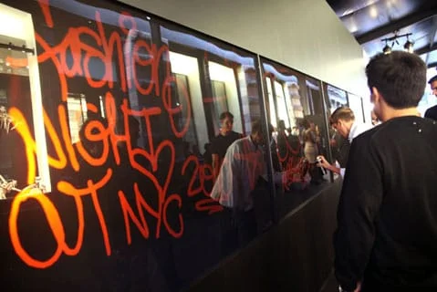
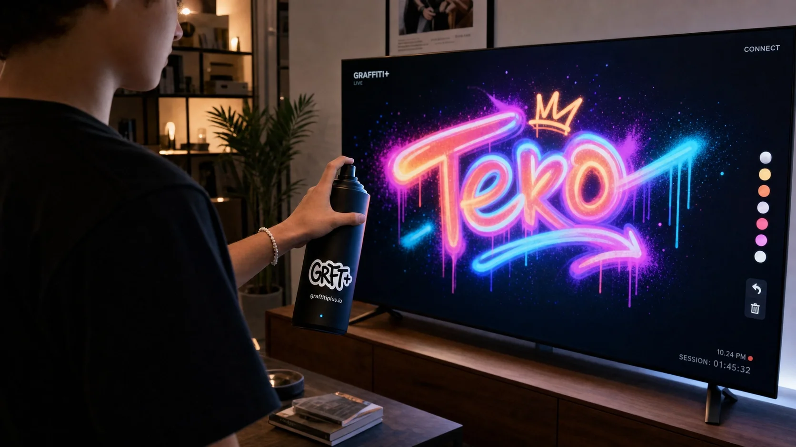
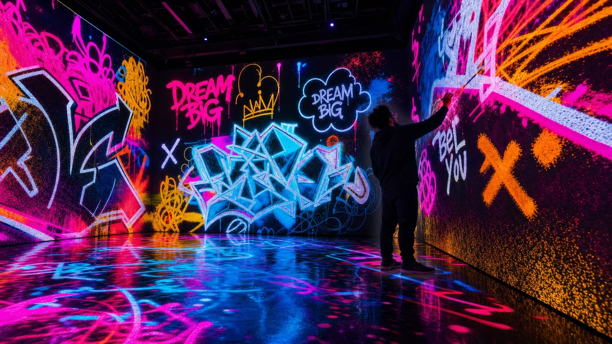

At Graffiti+, we believe in the power of art as a medium for expression, connection, and transformation. We are passionate about making the world of graffiti accessible to everyone, everywhere, in a way that respects and honors its roots and culture.
We believe in working with brands that get it — those who understand that graffiti is more than just street art; it's a voice for stories untold, a canvas for unbridled creativity, and a symbol of urban identity. Partnering with us means engaging in a respectful association with graffiti culture, where the art form and the brand grow from each other.
In the 1990s, long before any of this was a platform or a company, it was just writing — working in the streets, publishing graffiti, learning what happens when you give people a wall and real tools and get out of the way.
That decade led to graphic design, then a design studio, then a move to Canada and a pivot into interactive work. In Vancouver, the pieces clicked together: a background in street culture, years of building digital experiences, and a persistent question about what participation actually feels like when it's real.
In 2008, Graffiti+ was the answer. Not a tech product — a continuation of the same thing that started on walls in the 90s. The tools got more sophisticated. The question stayed the same.
The first version: IR cameras, flashlights, and a multi-user collaborative painting interface projected onto city buildings. Graffiti writers tested it before anyone else.

Fashion Week. Artists working alongside 500 guests across interactive screens wrapping the storefront. Spray can gesture integration built for this moment, physical movement as paint.
Featured in BizBash →Randall's Island. Motion capture tracking replaced earlier IR methods — more precision, more responsiveness. The kind of visual scale that stops foot traffic and holds it.
Samsung's concept showroom in London. Galaxy phones as spray-can controllers, active marker tracking, millimetre precision. The store's most-visited feature, with repeat visitors every day.
View project → Featured in GDR UK →Supported by NRC-IRAP, Canada's national R&D funding program for technology innovation. Five years to rebuild the core from scratch — fully custom 3D tracking, real paint physics, pressure and angle response, swappable caps, pro and user modes. No off-the-shelf components. Built to last.
NRC-IRAP supported →Paint onto 3D objects — basketballs, sneakers, custom forms. Export as AR. Art made at an event lives beyond it. People take their work home.
View Nike All-Star project →
Eighteen years of building for the world's biggest events has produced something worth bringing home. A consumer version is in R&D — the same cultural roots, the same real tools, built for a different scale.

Beyond flat screens. Fully immersive environments where the art fills the room. The platform that started on a projected building in Richmond becomes something you step inside.
We'll get back to you right away to schedule a call and live demo.